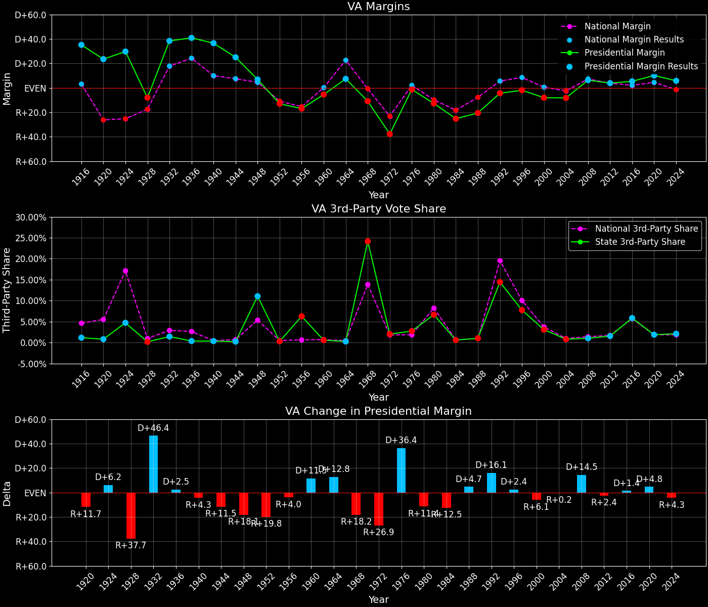

Virginia (VA) — Statewide

Margins · 3rd-Party share · Pres. deltas

Relative margins · Relative 3rd-Party · Rel. deltas
Virginia (VA) — Total Data
| Year | EVs | D | R | State Margin | Nat. Margin | Rel. Margin | Total votes |
|---|---|---|---|---|---|---|---|
| 1968 | 12 | 442,337(32.7%) | 590,319(43.6%) | R+10.9 | R+0.6 | R+10.3 | 1,354,489 |
| 1972 | 12 | 438,887(30.1%) | 988,533(67.8%) | R+37.7(Δ R+26.8) | R+23.5(Δ R+23.0) | R+14.2(Δ R+3.8) | 1,457,059 |
| 1976 | 12 | 810,705(47.9%) | 836,554(49.4%) | R+1.5(Δ D+36.2) | D+2.2(Δ D+25.7) | R+3.7(Δ D+10.5) | 1,693,903 |
| 1980 | 12 | 752,179(40.3%) | 989,609(53.0%) | R+12.7(Δ R+11.2) | R+9.9(Δ R+12.1) | R+2.8(Δ D+0.9) | 1,866,037 |
| 1984 | 12 | 796,250(37.1%) | 1,337,078(62.3%) | R+25.2(Δ R+12.5) | R+18.1(Δ R+8.2) | R+7.1(Δ R+4.3) | 2,146,635 |
| 1988 | 12 | 860,429(39.2%) | 1,309,162(59.7%) | R+20.5(Δ D+4.7) | R+7.7(Δ D+10.4) | R+12.7(Δ R+5.6) | 2,192,239 |
| 1992 | 13 | 1,038,650(40.6%) | 1,150,517(45.0%) | R+4.4(Δ D+16.1) | D+5.6(Δ D+13.3) | R+10.0(Δ D+2.8) | 2,558,665 |
| 1996 | 13 | 1,091,060(45.1%) | 1,138,350(47.1%) | R+2.0(Δ D+2.4) | D+8.6(Δ D+3.0) | R+10.5(Δ R+0.6) | 2,416,642 |
| 2000 | 13 | 1,217,290(44.5%) | 1,437,490(52.5%) | R+8.0(Δ R+6.1) | D+0.5(Δ R+8.0) | R+8.6(Δ D+1.9) | 2,736,640 |
| 2004 | 13 | 1,454,742(45.5%) | 1,716,959(53.7%) | R+8.2(Δ R+0.2) | R+2.5(Δ R+3.0) | R+5.7(Δ D+2.8) | 3,198,367 |
| 2008 | 13 | 1,959,532(52.6%) | 1,725,005(46.3%) | D+6.3(Δ D+14.5) | D+7.3(Δ D+9.7) | R+1.0(Δ D+4.8) | 3,723,260 |
| 2012 | 13 | 1,971,820(51.3%) | 1,822,522(47.4%) | D+3.9(Δ R+2.4) | D+3.9(Δ R+3.4) | D+0.0(Δ D+1.0) | 3,847,243 |
| 2016 | 13 | 1,981,473(49.8%) | 1,769,443(44.4%) | D+5.3(Δ D+1.4) | D+2.1(Δ R+1.8) | D+3.2(Δ D+3.2) | 3,982,752 |
| 2020 | 13 | 2,406,841(54.1%) | 1,960,187(44.0%) | D+10.0(Δ D+4.7) | D+4.4(Δ D+2.3) | D+5.6(Δ D+2.4) | 4,452,022 |
| 2024 | 13 | 2,335,395(51.8%) | 2,075,085(46.1%) | D+5.8(Δ R+4.3) | R+1.5(Δ R+6.0) | D+7.3(Δ D+1.7) | 4,505,941 |
Column explanations
- Δ
- Change (delta) in the value from the previous election year.
- Year
- Election year.
- EVs
- Number of electoral votes allocated to this state or unit.
- D
- Number of votes for the Democratic candidate (raw count(pct%)).
- R
- Number of votes for the Republican candidate (raw count(pct%)).
- State Margin
- Margin between the two major-party candidates, including third-party votes ((D - R)/total).
- Nat. Margin
- The national presidential margin for that year, including third-party votes ((D_total - R_total)/total_votes).
- Rel. Margin
- The presidential margin relative to the national presidential margin (Margin - Nat. Margin).
- Total votes
- Total voter turnout or ballots cast (when provided).
Virginia (VA) — Third-Party Data
| Year | D | R | Other votes | State 3rd-Party Share | 3rd-Party Nat. Share | 3rd-Party Rel. Share |
|---|---|---|---|---|---|---|
| 1968 | 442,337(32.7%) | 590,319(43.6%) | 321,833(23.8%) | 23.76% | 13.59% | 10.17% |
| 1972 | 438,887(30.1%) | 988,533(67.8%) | 29,639(2.0%) | 2.03% | 0.09% | 1.94% |
| 1976 | 810,705(47.9%) | 836,554(49.4%) | 46,644(2.8%) | 2.75% | 0.33% | 2.42% |
| 1980 | 752,179(40.3%) | 989,609(53.0%) | 124,249(6.7%) | 6.66% | 6.98% | -0.32% |
| 1984 | 796,250(37.1%) | 1,337,078(62.3%) | 13,307(0.6%) | 0.62% | 0.12% | 0.50% |
| 1988 | 860,429(39.2%) | 1,309,162(59.7%) | 22,648(1.0%) | 1.03% | 0.21% | 0.82% |
| 1992 | 1,038,650(40.6%) | 1,150,517(45.0%) | 369,498(14.4%) | 14.44% | 19.23% | -4.79% |
| 1996 | 1,091,060(45.1%) | 1,138,350(47.1%) | 187,232(7.7%) | 7.75% | 9.68% | -1.93% |
| 2000 | 1,217,290(44.5%) | 1,437,490(52.5%) | 81,860(3.0%) | 2.99% | 3.65% | -0.66% |
| 2004 | 1,454,742(45.5%) | 1,716,959(53.7%) | 26,666(0.8%) | 0.83% | 0.84% | -0.00% |
| 2008 | 1,959,532(52.6%) | 1,725,005(46.3%) | 38,723(1.0%) | 1.04% | 1.38% | -0.34% |
| 2012 | 1,971,820(51.3%) | 1,822,522(47.4%) | 52,901(1.4%) | 1.38% | 1.62% | -0.25% |
| 2016 | 1,981,473(49.8%) | 1,769,443(44.4%) | 231,836(5.8%) | 5.82% | 5.54% | 0.29% |
| 2020 | 2,406,841(54.1%) | 1,960,187(44.0%) | 84,994(1.9%) | 1.91% | 1.84% | 0.07% |
| 2024 | 2,335,395(51.8%) | 2,075,085(46.1%) | 95,461(2.1%) | 2.12% | 1.88% | 0.24% |
Column explanations
- Year
- Election year.
- D
- Number of votes for the Democratic candidate (raw count(pct%)).
- R
- Number of votes for the Republican candidate (raw count(pct%)).
- Other votes
- Number of votes for third-party (other) candidates (raw count(pct%)).
- State 3rd-Party Share
- Share of the vote received by third-party (other) candidates.
- 3rd-Party Nat. Share
- The national third-party share for that year (3rd-Party votes / total votes).
- 3rd-Party Rel. Share
- Third-party share relative to the national third-party share (3rd-Party share - Nat. 3rd-Party share).

Two-party margins · relative · deltas
Virginia (VA) — Two-Party Data
| Year | EVs | D | R | 2-Party Margin | 2-Party Nat. Margin | 2-Party Rel. Margin |
|---|---|---|---|---|---|---|
| 1968 | 12 | 442,337(42.8%) | 590,319(57.2%) | R+14.3 | R+0.7 | R+13.7 |
| 1972 | 12 | 438,887(30.7%) | 988,533(69.3%) | R+38.5(Δ R+24.2) | R+23.6(Δ R+22.9) | R+14.9(Δ R+1.3) |
| 1976 | 12 | 810,705(49.2%) | 836,554(50.8%) | R+1.6(Δ D+36.9) | D+2.2(Δ D+25.8) | R+3.8(Δ D+11.2) |
| 1980 | 12 | 752,179(43.2%) | 989,609(56.8%) | R+13.6(Δ R+12.1) | R+10.6(Δ R+12.8) | R+3.0(Δ D+0.8) |
| 1984 | 12 | 796,250(37.3%) | 1,337,078(62.7%) | R+25.4(Δ R+11.7) | R+18.1(Δ R+7.5) | R+7.2(Δ R+4.2) |
| 1988 | 12 | 860,429(39.7%) | 1,309,162(60.3%) | R+20.7(Δ D+4.7) | R+7.8(Δ D+10.4) | R+12.9(Δ R+5.7) |
| 1992 | 13 | 1,038,650(47.4%) | 1,150,517(52.6%) | R+5.1(Δ D+15.6) | D+6.9(Δ D+14.7) | R+12.0(Δ D+0.9) |
| 1996 | 13 | 1,091,060(48.9%) | 1,138,350(51.1%) | R+2.1(Δ D+3.0) | D+9.5(Δ D+2.6) | R+11.6(Δ D+0.4) |
| 2000 | 13 | 1,217,290(45.9%) | 1,437,490(54.1%) | R+8.3(Δ R+6.2) | D+0.5(Δ R+8.9) | R+8.8(Δ D+2.8) |
| 2004 | 13 | 1,454,742(45.9%) | 1,716,959(54.1%) | R+8.3(Δ D+0.0) | R+2.5(Δ R+3.0) | R+5.8(Δ D+3.0) |
| 2008 | 13 | 1,959,532(53.2%) | 1,725,005(46.8%) | D+6.4(Δ D+14.6) | D+7.4(Δ D+9.8) | R+1.0(Δ D+4.8) |
| 2012 | 13 | 1,971,820(52.0%) | 1,822,522(48.0%) | D+3.9(Δ R+2.4) | D+3.9(Δ R+3.4) | EVEN(Δ D+1.0) |
| 2016 | 13 | 1,981,473(52.8%) | 1,769,443(47.2%) | D+5.7(Δ D+1.7) | D+2.2(Δ R+1.7) | D+3.4(Δ D+3.4) |
| 2020 | 13 | 2,406,841(55.1%) | 1,960,187(44.9%) | D+10.2(Δ D+4.6) | D+4.5(Δ D+2.3) | D+5.7(Δ D+2.3) |
| 2024 | 13 | 2,335,395(53.0%) | 2,075,085(47.0%) | D+5.9(Δ R+4.3) | R+1.6(Δ R+6.1) | D+7.5(Δ D+1.8) |
Column explanations
- Δ
- Change (delta) in the value from the previous election year.
- Year
- Election year.
- EVs
- Number of electoral votes allocated to this state or unit.
- D
- Number of votes for the Democratic candidate (raw count(pct%)).
- R
- Number of votes for the Republican candidate (raw count(pct%)).
- 2-Party Margin
- Margin between the two major-party candidates, ignoring third-party votes ((D - R)/(D + R)).
- 2-Party Nat. Margin
- The national presidential margin for that year, including third-party votes ((D_total - R_total)/total_votes).
- 2-Party Rel. Margin
- The presidential margin relative to the national presidential margin (Margin - Nat. Margin).